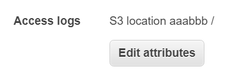
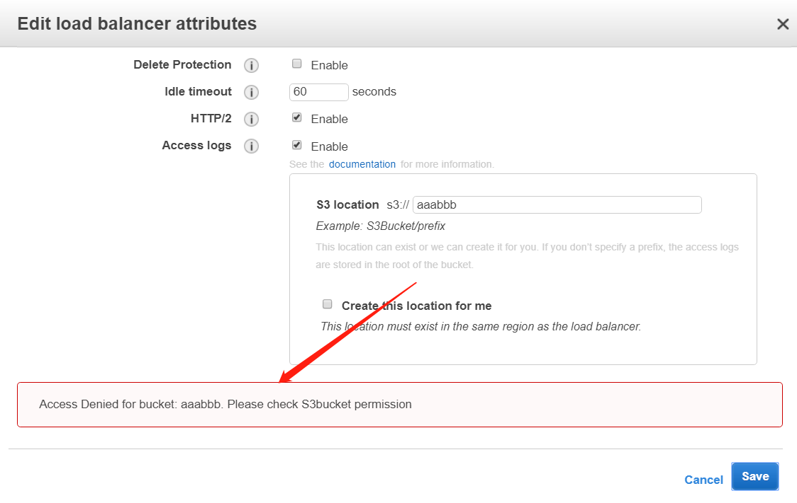
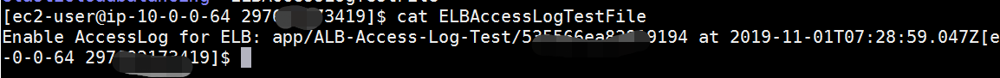
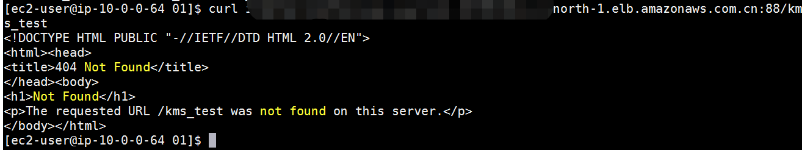
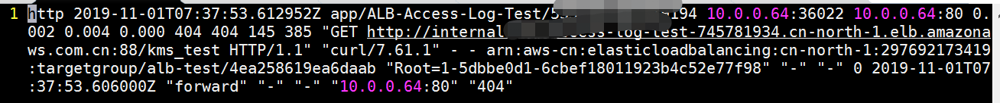
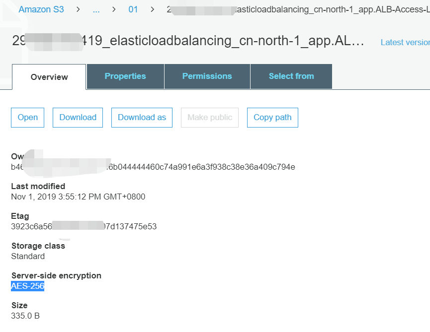

AWS ALB Access log与KMS加密S3 Bucket的那些恩怨情仇
0x00 前言
偶然遇到的一个问题，记录一下测试过程。
先说结论：AWS ALB Access log推荐使用SSE-S3的加密方式或者不加密的方式。截止目前不支持使用KMS加密的S3 Bucket。
0x01 ALB配置access log的常规流程
通常情况下，我们要给ALB开一个Access Log除了要选择S3 Bucket外，还要保证目标S3 Bucket有ALB PutObject的权限。
示例Policy如下：1
2
3
4
5
6
7
8
9
10
11
12
13{
"Version": "2012-10-17",
"Statement": [
{
"Effect": "Allow",
"Principal": {
"AWS": "arn:aws-cn:iam::638102146993:root"
},
"Action": "s3:PutObject",
"Resource": "arn:aws-cn:s3:::aaabbb/*"
}
]
}
那如果这个时候S3 Bucket不采用任何加密方式，或者使用SSE-S3的加密方式的话，已经可以正常使用了。

0x02 ALB Access log 不支持使用KMS加密的S3 Bucket
但是如果要是使用KMS加密的话，直接保存的时候就会报错了，而我也确认在KMS端我们给了ELB服务账号638102146993的访问权限。

文档里倒是没有明确说明不支持，但是我在论坛里看到这么一句话：“storing ALB access logs in a S3 bucket with SSE-KMS encryption enabled is still not supported.”。所以截至目前还没上这个功能呢。
0x03 先设置为access log的S3 Bucket，然后再修改为KMS加密会怎么样？
然后我又做了这个实验，测试过程：

这个是之前打进来的测试文件，可以看到，每次设置access log的时候，它会先put一个测试文件，如果put失败了，那也就设置不成功，所以会返回错误。
回到测试过程，我现在已经将access log配置好了，然后修改了S3的加密方式为KMS加密

等20分钟。

卧槽竟然收到日志了，神奇。。。为了避免是延迟导致的，所以我有做了一个测试，发现还能写进去，加密方式是原来的AES-256（SSE-S3）。interesting

0x04 结论
如果要做ALB的Access log，可以使用未加密的S3 Bucket，或者使用SSE-S3加密的S3 Bucket。
不过为啥我后来改为KMS，但是它成功了（传上去的log加密方式还是AES256 SSE-S3），而在最开始设置的时候就没成功，我理解他背后调用的都是PutObject，既然我加密方式选择为KMS了，但是传上去的log加密却是SSE-S3？interesting。
嗯，后来请教了大佬，目前就是不支持使用KMS加密的S3 Bucket存放ALB的Access log的。hhh